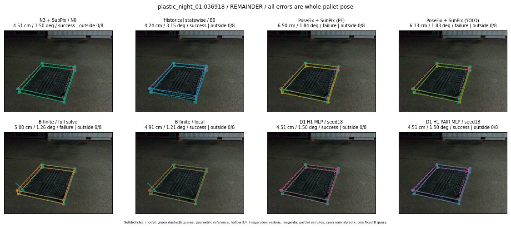

Whole-pallet pose errors; reference is a fixed geometric annotation, not certified physical GT.

Scores are uncalibrated logits. N0 retention is a numerical pose alias; it differs from H0 none or B fallback. B/I and profiles in baseline/B panels are original observations; L panels use new D1 observations. Only one deterministic supported B query is shown in a thumbnail; full support counts are below. Grey privacy rectangles edit the display copy only and are unrelated to O states; all observations were measured on original pixels. Thumbnails use JPEG quality85; detailed scientific panels are PNG.
| Method | Whole pose / cm, deg | Actual source | Selected ID | Score | Archived candidates | Eligible | N0 retained | H0 none | Fallback | Finite profiles |
|---|---|---|---|---|---|---|---|---|---|---|
| Raw YOLO + F | 4.07 cm / 1.38 deg / success | OTHER | None | N/A | N/A | N/A | False | N/A | None | N/A |
| N3 + SubPix / N0 | 4.51 cm / 1.50 deg / success | N0 | None | N/A | N/A | N/A | True | N/A | None | N/A |
| Historical statewise / E0 | 4.24 cm / 3.15 deg / success | E0_REGENERATED | None | N/A | N/A | N/A | False | N/A | False | N/A |
| PoseFix raw | 7.66 cm / 1.86 deg / failure | OTHER | None | N/A | N/A | N/A | False | N/A | None | N/A |
| PoseFix + SubPix (PF) | 6.50 cm / 1.84 deg / failure | OTHER | None | N/A | N/A | N/A | False | N/A | False | historical support records 9; finite audit N/A |
| PoseFix + SubPix (YOLO) | 6.13 cm / 1.83 deg / failure | OTHER | None | N/A | N/A | N/A | False | N/A | False | historical support records 9; finite audit N/A |
| Historical L, seed18 | 4.23 cm / 3.15 deg / success | OTHER | NEW/A/ORIGINAL_WD/h0/G13/ORIGINAL_WD/sample/0/PROPOSED_NATIVE_YAW_0 | N/A | 79 | 79 | False | False | False | N/A |
| Historical B fixed bank | 4.51 cm / 1.50 deg / success | N0 | N0 | N/A | N/A | N/A | True | N/A | False | N/A |
| Historical B full | 4.80 cm / 0.88 deg / success | OTHER | NEW/B/ORIGINAL_WD/h0/G13/ORIGINAL_WD/sample/0/PROPOSED_NATIVE_YAW_0 | N/A | N/A | N/A | False | N/A | False | N/A |
| Historical edge full | 6.10 cm / 4.18 deg / failure | OTHER | NEW/edge/ORIGINAL_WD/h0/G13/ORIGINAL_WD/sample/0/PROPOSED_NATIVE_YAW_0 | N/A | N/A | N/A | False | N/A | False | N/A |
| Historical AB full | 3.93 cm / 0.69 deg / success | OTHER | NEW/AB/ORIGINAL_WD/h0/G13/ORIGINAL_WD/sample/0/PROPOSED_NATIVE_YAW_0 | N/A | N/A | N/A | False | N/A | False | N/A |
| B finite / fixed bank | 4.51 cm / 1.50 deg / success | N0 | N0 | N/A | N/A | N/A | True | N/A | False | 36/36 |
| B finite / full solve | 5.00 cm / 1.26 deg / failure | OTHER | NEW_FINITE/B/ORIGINAL_WD/h0/G13/ORIGINAL_WD/sample/0/PROPOSED_NATIVE_YAW_0 | N/A | N/A | N/A | False | N/A | False | 36/36 |
| B finite / local | 4.91 cm / 1.21 deg / success | OTHER | NEW_FINITE/B/ORIGINAL_WD/h0/N0_LOCAL_SAME_PHYSICAL_POSE/ORIGINAL_WD | N/A | N/A | N/A | False | N/A | False | 36/36 |
| Edge finite / full solve | 4.51 cm / 1.50 deg / success | N0 | N0 | N/A | N/A | N/A | True | N/A | False | 36/36 |
| D0 H0 MLP / seed18 | 4.24 cm / 3.15 deg / success | E0_REGENERATED | E0_REGENERATED | 4.2480549812316895 | 45 | 45 | False | False | False | N/A |
| D0 H0 MLP / seed19 | 4.24 cm / 3.15 deg / success | E0_REGENERATED | E0_REGENERATED | 5.458839416503906 | 45 | 45 | False | False | False | N/A |
| D0 H0 MLP / seed20 | 4.51 cm / 1.50 deg / success | N0 | N0 | 2.769835948944092 | 45 | 45 | True | True | True | N/A |
| D0 H1 MLP / seed18 | 4.51 cm / 1.50 deg / success | N0 | N0 | 0.007643498480319977 | 45 | 45 | True | False | False | N/A |
| D0 H1 MLP / seed19 | 4.51 cm / 1.50 deg / success | N0 | N0 | 0.42566484212875366 | 45 | 45 | True | False | False | N/A |
| D0 H1 MLP / seed20 | 4.51 cm / 1.50 deg / success | N0 | N0 | -1.0555602312088013 | 45 | 45 | True | False | False | N/A |
| D1 H0 MLP / seed18 | 4.51 cm / 1.50 deg / success | N0 | N0 | 9.301251411437988 | 45 | 45 | True | True | True | N/A |
| D1 H0 MLP / seed19 | 4.51 cm / 1.50 deg / success | N0 | N0 | 9.567660331726074 | 45 | 45 | True | True | True | N/A |
| D1 H0 MLP / seed20 | 4.51 cm / 1.50 deg / success | N0 | N0 | 8.521821022033691 | 45 | 45 | True | True | True | N/A |
| D1 H1 MLP / seed18 | 4.51 cm / 1.50 deg / success | N0 | N0 | 0.06526771187782288 | 45 | 45 | True | False | False | N/A |
| D1 H1 MLP / seed19 | 4.51 cm / 1.50 deg / success | N0 | N0 | -0.7171823978424072 | 45 | 45 | True | False | False | N/A |
| D1 H1 MLP / seed20 | 4.51 cm / 1.50 deg / success | N0 | N0 | -0.5480494499206543 | 45 | 45 | True | False | False | N/A |
| D1 H1 ROLE AFFINE / seed18 | 4.24 cm / 3.15 deg / success | E0_REGENERATED | E0_REGENERATED | -0.854230523109436 | 45 | 45 | False | False | False | N/A |
| D1 H1 ROLE AFFINE / seed19 | 4.51 cm / 1.50 deg / success | N0 | N0 | -0.535260021686554 | 45 | 45 | True | False | False | N/A |
| D1 H1 ROLE AFFINE / seed20 | 4.24 cm / 3.15 deg / success | E0_REGENERATED | E0_REGENERATED | -0.5220913290977478 | 45 | 45 | False | False | False | N/A |
| D1 H1 PAIR MLP / seed18 | 4.51 cm / 1.50 deg / success | N0 | N0 | -1.7583198547363281 | 45 | 2 | True | False | False | N/A |
| D1 H1 PAIR MLP / seed19 | 4.51 cm / 1.50 deg / success | N0 | N0 | -1.2101023197174072 | 45 | 2 | True | False | False | N/A |
| D1 H1 PAIR MLP / seed20 | 4.51 cm / 1.50 deg / success | N0 | N0 | -0.7650049924850464 | 45 | 2 | True | False | False | N/A |
| D1 H1 PAIR ROLE AFFINE / seed18 | 4.51 cm / 1.50 deg / success | N0 | N0 | -1.1010924577713013 | 45 | 2 | True | False | False | N/A |
| D1 H1 PAIR ROLE AFFINE / seed19 | 4.51 cm / 1.50 deg / success | N0 | N0 | -0.8446885347366333 | 45 | 2 | True | False | False | N/A |
| D1 H1 PAIR ROLE AFFINE / seed20 | 4.51 cm / 1.50 deg / success | N0 | N0 | -0.8329622745513916 | 45 | 2 | True | False | False | N/A |
| Regenerated common E0 | 4.24 cm / 3.15 deg / success | E0_REGENERATED | E0_REGENERATED | N/A | N/A | N/A | False | N/A | False | N/A |